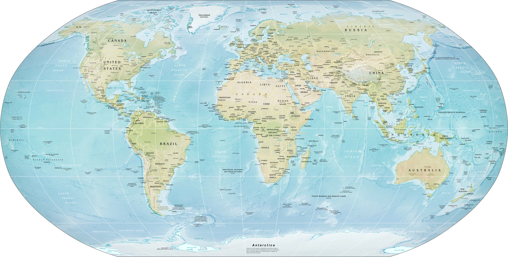
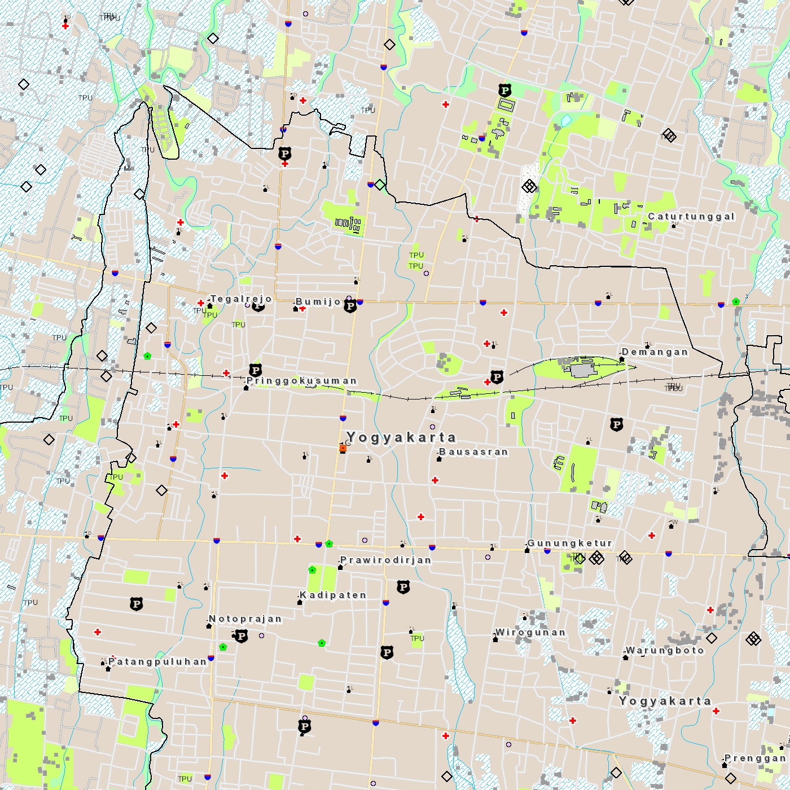

Pengertian dan konsep kartografi
Memahami apa itu kartografi, mengapa peta dibuat, bagaimana peta menyederhanakan dunia nyata, serta peran kartografi dalam menyampaikan informasi geografis.
1. Tujuan pembelajaran
Setelah pertemuan ini, mahasiswa diharapkan mampu menjelaskan definisi, konsep dasar, dan peran kartografi. Materi ini menjadi fondasi untuk klasifikasi peta, komunikasi kartografis, komponen peta, dan topik berikutnya.
Inti pertemuan: kartografi bukan hanya menggambar peta. Kartografi mencakup pemilihan informasi, penyederhanaan, simbolisasi, penyusunan tampilan, dan penyampaian informasi geografis kepada pembaca.
2. Pengertian kartografi
Kartografi adalah bidang yang berkaitan dengan pembuatan, penyajian, penggunaan, dan pemahaman peta. Peta menyajikan sebagian realitas geografis dalam bentuk yang lebih sederhana agar dapat dibaca dan digunakan.
Peta bukan salinan dunia nyata
Dunia nyata terlalu kompleks untuk ditampilkan seluruhnya. Pembuat peta harus memilih objek dan informasi yang relevan sesuai tujuan. Karena itu, peta selalu melibatkan seleksi, penyederhanaan, dan simbolisasi.
3. Fungsi peta
- Menunjukkan lokasi dan hubungan antarobjek.
- Menunjukkan pola yang sulit dilihat langsung di lapangan.
- Menyajikan wilayah yang luas dalam satu tampilan.
- Mendukung perencanaan, navigasi, analisis, komunikasi, dan pengambilan keputusan.

Sumber: CIA World Factbook, versi Wikimedia Commons, public domain.
4. Konsep dasar yang selalu ada dalam peta
- TujuanPeta dibuat untuk kebutuhan tertentu. Informasi yang dipilih harus mendukung tujuan tersebut.
- WilayahPeta selalu mempunyai cakupan ruang tertentu, dari lokasi kecil hingga seluruh dunia.
- SkalaDunia nyata diperkecil. Tingkat pengecilan memengaruhi detail yang dapat ditampilkan.
- SimbolObjek nyata diwakili oleh tanda, warna, garis, atau area.
- GeneralisasiObjek dipilih dan disederhanakan karena tidak semua detail dapat ditampilkan.
- KomunikasiPeta harus dapat dipahami oleh pembaca yang menjadi sasaran.
5. Kartografi sebagai proses
- Menentukan tujuan peta dan siapa pembacanya.
- Memilih data yang relevan.
- Menentukan skala dan cakupan.
- Memilih simbol dan cara penyajian.
- Menyusun peta agar informasi utama mudah ditemukan.
- Mengevaluasi apakah peta menyampaikan informasi dengan benar dan jelas.
Kesimpulan: membuat peta berarti membuat keputusan tentang informasi apa yang ditampilkan dan bagaimana informasi itu disampaikan.
6. Contoh: peta RBI sebagai produk kartografi

Peta RBI tidak menggambar setiap benda yang ada di lapangan. Jalan, sungai, bangunan, fasilitas, dan unsur lain dipilih dan disimbolkan agar informasi penting dapat dibaca pada skala tertentu.
7. Ringkasan
- Kartografi berkaitan dengan pembuatan dan komunikasi melalui peta.
- Peta adalah representasi yang dipilih dan disederhanakan, bukan salinan lengkap dunia nyata.
- Tujuan, pembaca, skala, simbol, dan generalisasi memengaruhi bagaimana sebuah peta dibuat.
Lanjut ke Minggu 2: Klasifikasi peta dan lingkup kartografi →